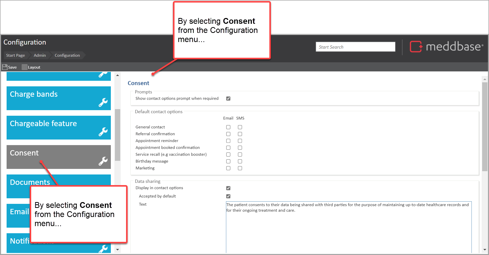
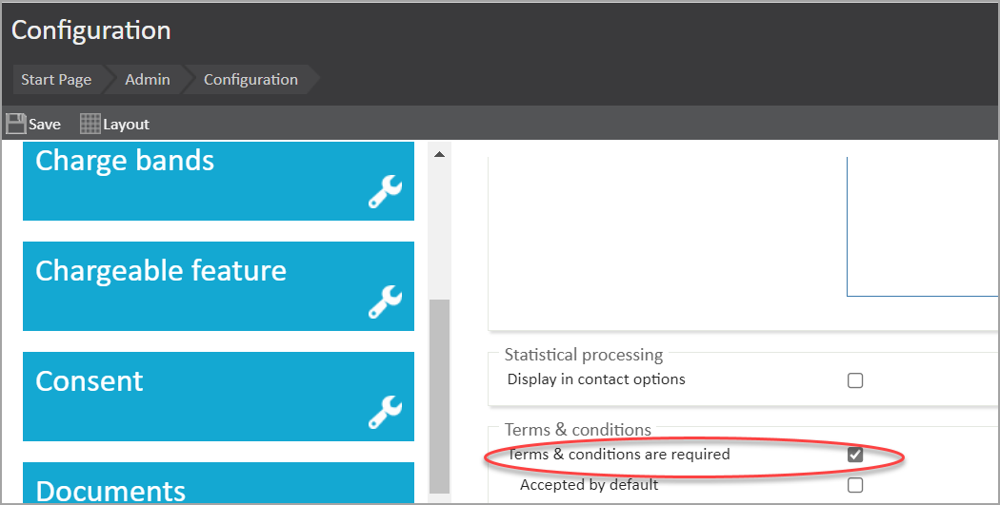
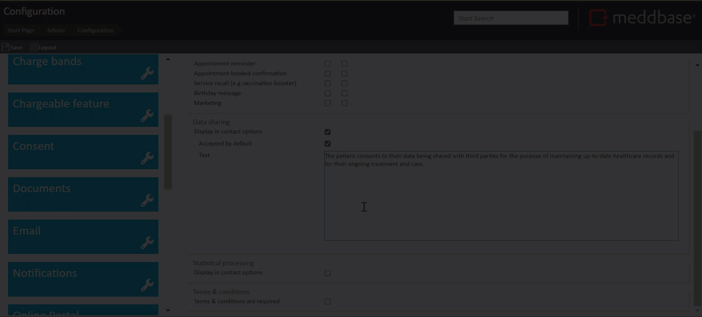
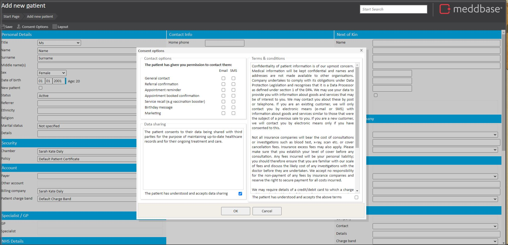
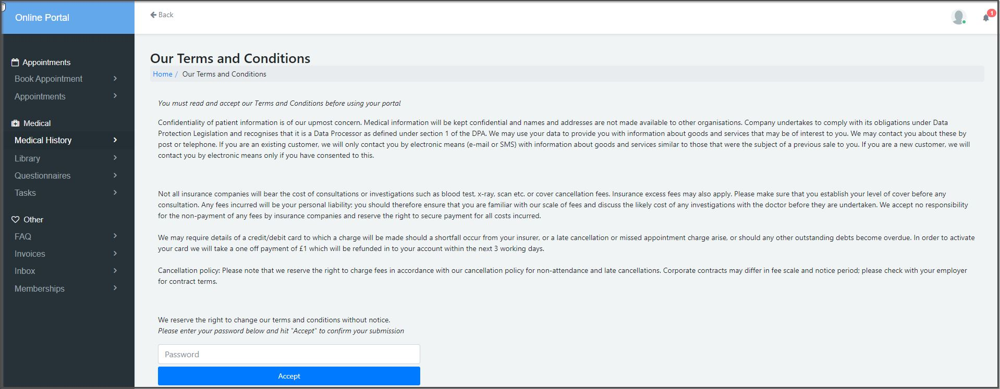
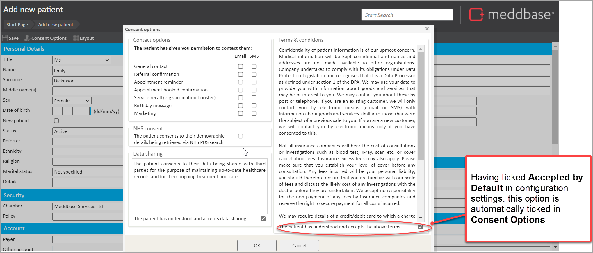
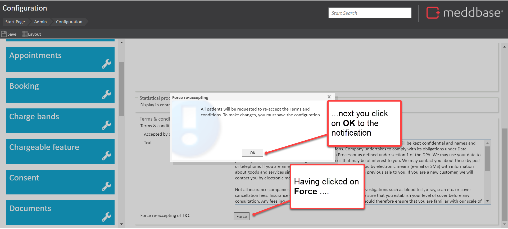
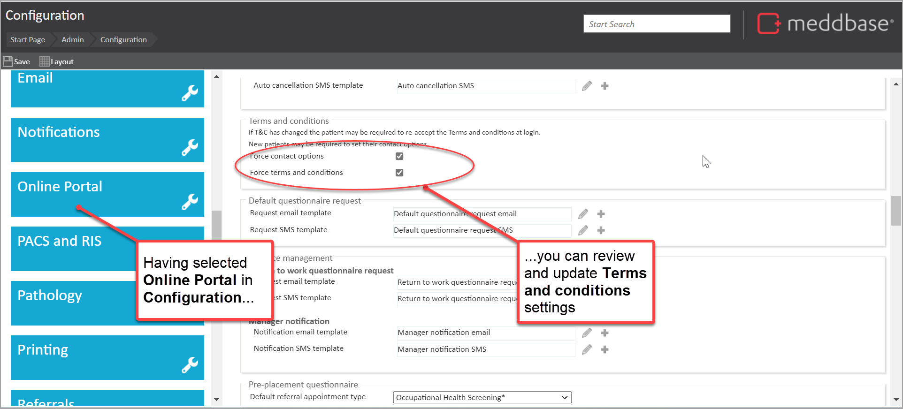
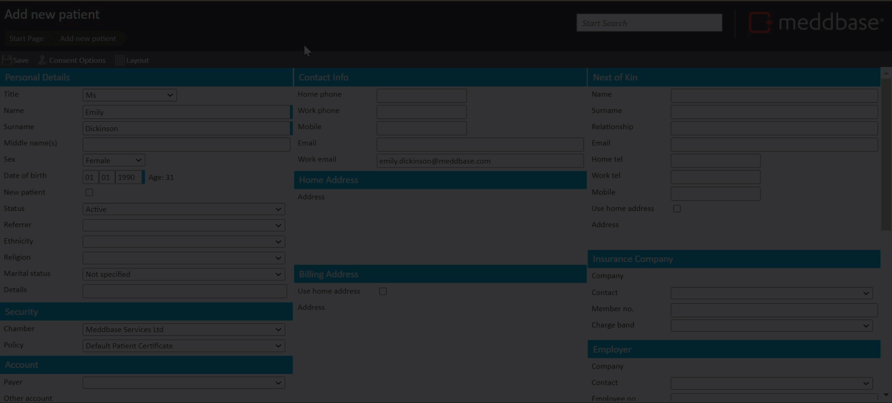

There are a range of configuration options for Terms & Conditions (T&Cs) you can set for the Meddbase application, the Patient Portal and both in combination.
This article outlines:
To find and update these options, you can do as follows:

Applying different configuration settings impact the behaviour of the system. What the settings are and what impact they have in the application is outlined in the sub-sections below.

If this box is ticked it will initially reveal the further options of

As a result of ticking the box and saving the setting, it enables Terms and Conditions to appear in the Consent Options pop up on the Personal details page of the Meddbase and on the Patient Portal.
In Meddbase the user would see something similar to this example below.

In the Patient Portal, the portal user would see something similar to the example below.

If you tick this box and save the configuration setting, it automatically ticks the box on the Consent options pop up in Meddbase. But it won't have any effect on the Patient Portal > Our Teams and Conditions page.

You can write text here that relates to what the patient is accepting. This text will be the text visible on the Consent options pop up and the Patient Portal.
If you:

It will request all patients to re-accept the T&Cs via Meddbase but not the Patient Portal.
For the Patient Portal, the Force button will not action anything. To make sure changes to the text can be accepted via Patient Portal too, you go to Online Portal > Terms & conditions > Force terms and conditions and tick the box. You must click save after.
To do this:
These config settings are for the Patient Portal. The Patient Portal is only accessible to people on a Charge Band with Online Booking enabled.

Force Terms and Conditions
If a patient does not have their T&Cs accepted while registering via Meddbase having this ticked will result in the T&Cs appearing on the Patient portal when they log in.
Also, if there has been a change in contact options since they were last accepted, Force Terms and Conditions being ticked will force the patient to accept the new T&C's on the Patient Portal. So that
For patients who do not want to accept the T&Cs:
When a patient logs in to the patient portal for the first time and doesn't have T&Cs accepted the T&Cs will not appear unless Force terms and conditions are ticked.
When registering a patient on Meddbase you can skip acceptance of Terms and conditions. To do this:

The patient record is created and a notification is displayed that the patient has not accepted terms and conditions.
You can run a report of patients and their T&Cs. via Admin > Report > File Admin > Query Builder.
If the patient accepts the T&Cs on the Patient Portal no notifications appear in Meddbase, but you can check the time stamp.